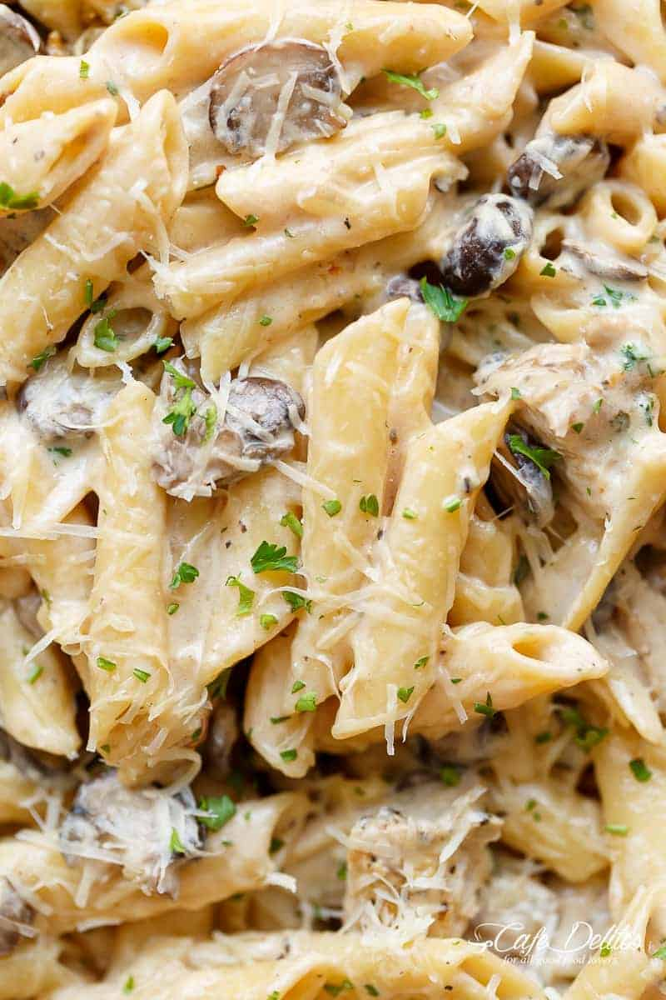

Creamy Mushroom Pasta

Description
A rich and satisfying pasta dish featuring sautéed mushrooms in a garlic cream sauce. Perfect for a cozy dinner when you're craving something comforting and delicious.
8 oz pasta
2 cups mushrooms
3 cloves garlic
1 cup heavy cream
2 tbsp butter
Salt and pepper
Parmesan cheese
Steps
Cook pasta according to package instructions
Sauté mushrooms in butter until golden
Add minced garlic and cook until fragrant
Pour in heavy cream and simmer
Season with salt and pepper
Add cooked pasta to the sauce
Top with parmesan and serve
Home